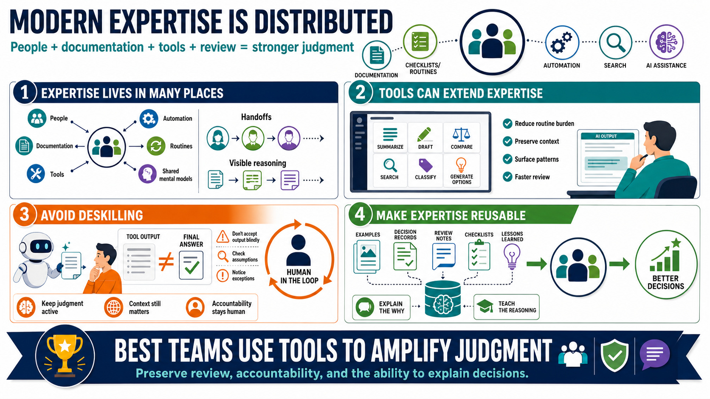

Expertise in Teams, Tools, and AI-Assisted Work
Connecting to LMS... Progress: in progress

Narration
Modern expertise is often distributed. A team may hold more capability than any one individual because knowledge is spread across people, documentation, tools, automation, and routines. Shared mental models help the group coordinate. Handoffs help expertise move across time and role boundaries. Documentation makes important reasoning visible instead of trapping it inside one person's memory.
Tools can extend expertise when they reduce routine burden, preserve context, surface patterns, or make review easier. Automation can help with consistency and speed. AI assistance can summarize, draft, compare, search, classify, or generate options. But tool output still needs expert review. A tool can produce fluent results without understanding context, consequences, or the organization's tolerance for risk.
A major challenge is avoiding deskilling. If people accept tool output without inspection, they may lose the habit of checking assumptions, noticing exceptions, and understanding why an answer is appropriate. Better designs keep humans engaged in the judgment loop. They use tools to make expertise more effective, not to hide the work so completely that no one can evaluate it.
Teams can make expertise reusable by capturing examples, decision records, review notes, checklists, and lessons learned. They can teach expertise by explaining how strong performers think, not just what they conclude. AI-assisted work makes this even more important. The strongest teams use tools to amplify judgment, while preserving accountability, review, and the ability to explain why a decision makes sense.